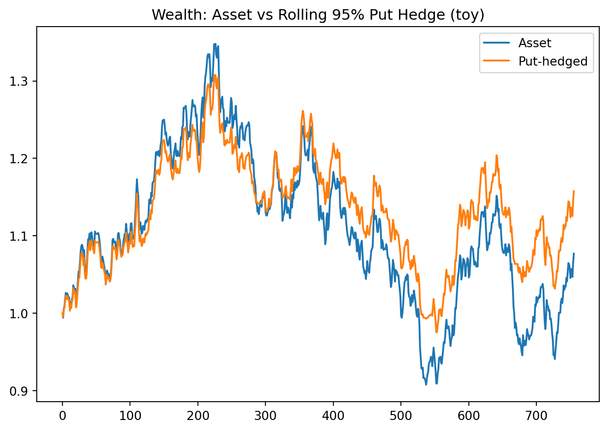
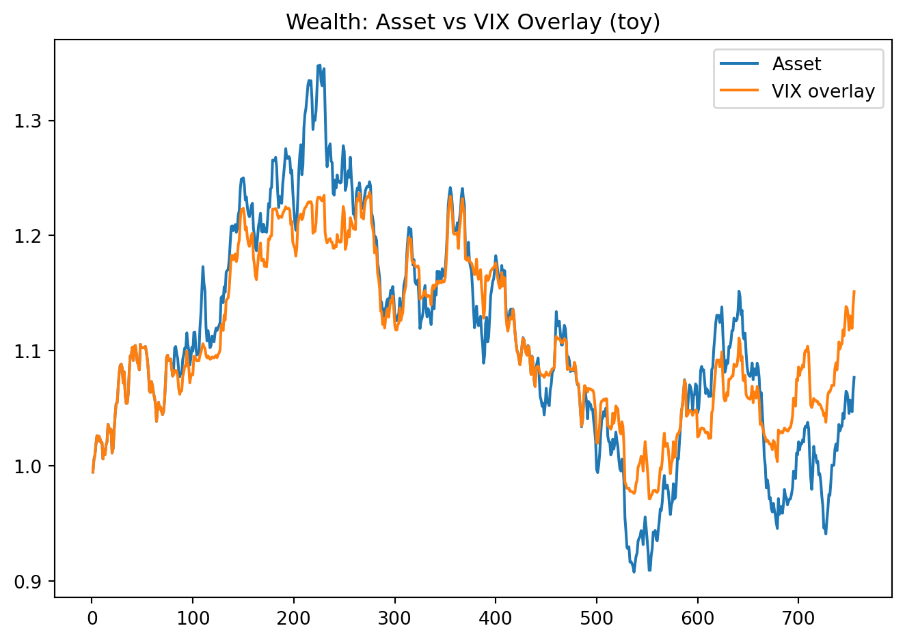

import numpy as np, pandas as pd, matplotlib.pyplot as plt
from scripts.hedging import rolling_put_hedge, vix_overlay
from scripts.simulations import simulate_ar1
price = simulate_ar1(mu_ann=0.00, rho=0.2, sigma_ann=0.15, years=3, seed=123)
rets = price.pct_change().dropna()
hedged, roll_flags = rolling_put_hedge(price, moneyness=0.95, tenor_days=21, iv_annual=0.20)
wealth_asset = (1+rets).cumprod()
wealth_hedged = (1+hedged).cumprod()
plt.figure(); wealth_asset.plot(label="Asset"); wealth_hedged.plot(label="Put-hedged")
plt.title("Wealth: Asset vs Rolling 95% Put Hedge (toy)"); plt.legend(); plt.tight_layout(); plt.show()
vix_proxy = -rets * 3.0
trigger = rets.rolling(10).std().shift(1) > rets.rolling(60).std().shift(1)
vix_ov = vix_overlay(rets, vix_proxy, trigger, hedge_weight=0.2).dropna()
plt.figure(); (1+rets).cumprod().plot(label="Asset"); (1+vix_ov).cumprod().plot(label="VIX overlay")
plt.title("Wealth: Asset vs VIX Overlay (toy)"); plt.legend(); plt.tight_layout(); plt.show()
